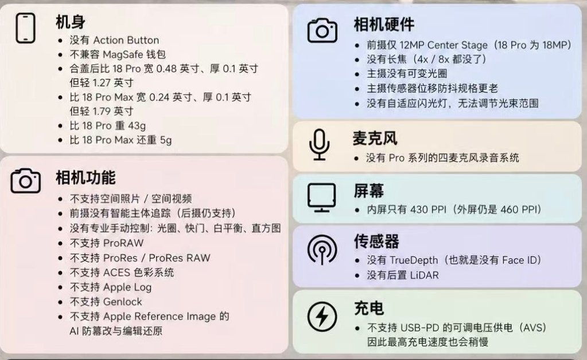
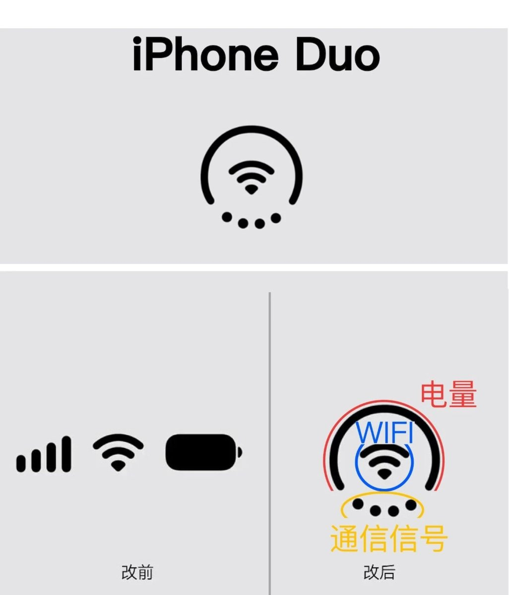

对比了下iPhone 18 Pro和iPhone Duo的区别，感觉这个产品是iPhone Air的续作，连个SIM卡槽都没有，另外USB-C跟标准版一样是USB2.0
今年的国行iPhone蛮有诚意，既能双实体SIM也能eSIM在海外用。买国行更多是为了用中国特供eSIM，即便是硬件支持双CA但软件限制2张上限，有一个实体卡槽放eSTK或BeeSIM蓝牙卡就好了
总之，感觉买苹果折叠机的人不需要理智，也不需要考虑性价比，只是单纯的喜欢不喜欢。到了这个价位，已经不能单纯看配置了。以前的苹果，能用出效果的也没几个，完全是看价位能不能接受
今年的国行iPhone蛮有诚意，既能双实体SIM也能eSIM在海外用。买国行更多是为了用中国特供eSIM，即便是硬件支持双CA但软件限制2张上限，有一个实体卡槽放eSTK或BeeSIM蓝牙卡就好了
总之，感觉买苹果折叠机的人不需要理智，也不需要考虑性价比，只是单纯的喜欢不喜欢。到了这个价位，已经不能单纯看配置了。以前的苹果，能用出效果的也没几个，完全是看价位能不能接受

